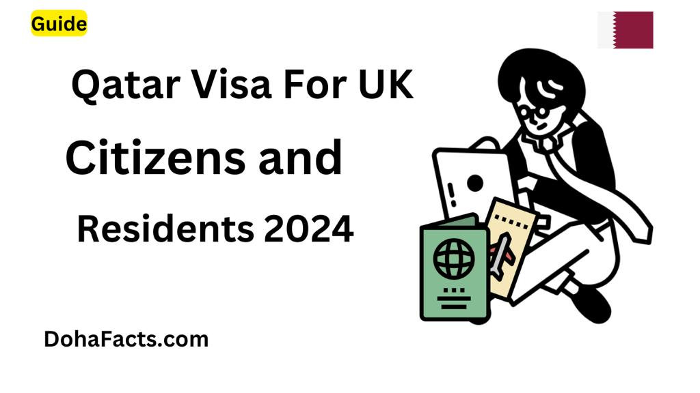

Qatar Visa For UK Citizens and Residents 2024 ?
By Dohafacts.com / updated : 24/01/2024 British citizen traveling to Qatar for tourism purposes do not require a visa, if they meet the following requirements.
- They hold a full British Citizen Passport valid for at least 6 months beyond the intended to stay in Qatar.
- They have a confirmed onward or return ticket.
- They intend to stay in Qatar for up to 30 days, either on a single trip or multiple trip within a 180 day period.
If you meet all of these requirements, you will be able to obtain a visa waiver upon arrival in Qatar. This waver is a free of charge.
Important :
- If you are traveling to Qatar for any purpose other than tourism, you will need to apply for a visa before you travel. This includes business travel, work, study, and medical treatment.
- If you hold a British Oversease Territories Citizen(BOTC) passport, British National (OVersease) passport, or British Subject Passport you will need to apply for a visa before you travel, regardless of the purpose of your trip.
How To Apply For a Qatar Visa :
You can apply for a Qatar visa online through Hayya Portal.The visa price is QR 100 (USD 27).
Requirement for a Qatar Visa :
- A complete online visa application form
- A valid passport at least 6 months validity remaining
- Two passport size photographs
- Proof of onward or return travel
- Proof of accommodation(if required)
- Other documentation specific to the purpose of your trip (e.g letter of invitation for business travel, proof of enrollment for study).
Processing time for a Qatar visa :
The Qatar visa processing time is typically 5 working days. However, it can take longer if your application is incomplete or if you require additional documentation.
Here are some additional tips when planning trip to Qatar.
- The currency in Qatar is the Qatari Riyal(QAR). ATMs are widely available, but it is always good idea to bring some QAR with you before you travel.
- The offical language of Qatar is Arabic, but English is widely spoken in tourist areas.
- Qatar is a Musalim Country, and there are some dress codes that visitors should be aware of. Women should avoid wearing clothing that is too revealing, and men should avoid wearing shorts or sleeveless shirts in public places.
- Alcohal is only available in licensed hotels and restaurants.
I hope this helps you ! Let me know if you have any question !